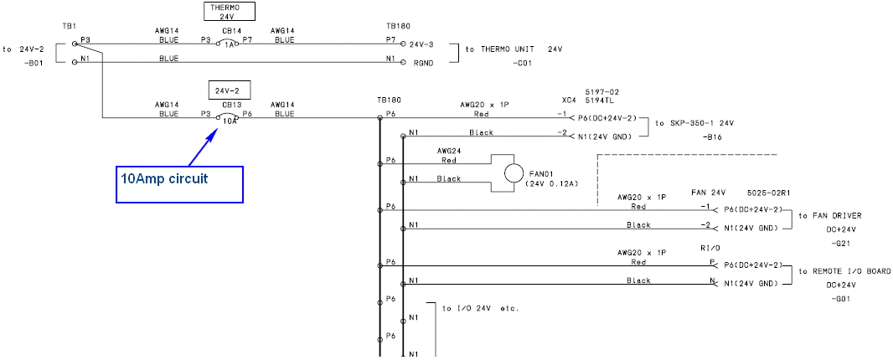
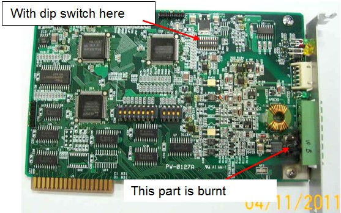
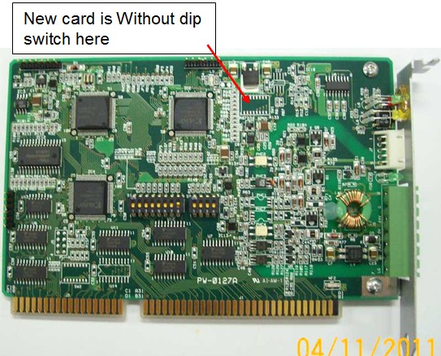
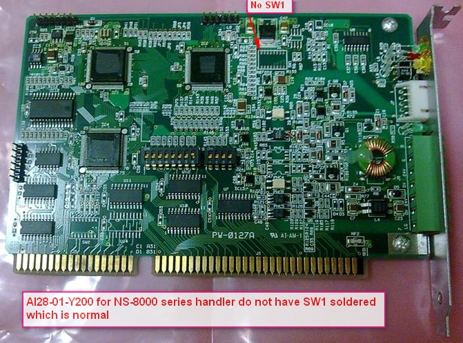

Service History
Subject: IDT(M) NS-7000(NS03) Remote I/O burnt issue
Handler Model: NS-7000
Controller:
Date: 3 Nov 2011
Symptom
IDT(M) NS-7000(NS03) Remote I/O board (Specification: AI28-01-Y03 / Code No. R33N700002000) burnt issue. The uni-wire transmission line is disconnected
Action
Email follow up, advise customer to check resistance at Remote I/O points such as P6 & N1.Based on wiring diagram, 24V supply goes through the 10A circuit breaker CB13 and used by SKP-350, FAN01, FAN DRIVER and Remote I/O Board.
Request to remove the additional 1A or 2A fuse on Remote I/O card and plug card back to controller.
4 Nov 2011
Customer checked Remote I/O point resistance when power off, ok:- P6 & N1 (not 0 ohms) ---- > about 1.5k ohms
- Black & Red (not 0 ohms) ----> about 3.9M ohms
- Green & White (not 0 ohms) ----> about 1.5k ohms
Use multi-meter to check below on Remote IO Board when power off
1. Between D-G NO short-circuit.
(Resistance: > 200 Ohms( Value will be depended on equipment))
2. Between 0-24V NO short-circuit.
(Resistance: >few kilo Ohms (Value will be depended on equipment))
Removed additional fuse.
Install SW1 switch and plug back to RC520, handler ok.
Send procedure on how to initialise new Remote I/O board.
Advise customer to do initialising of new Remote I/O board.


Cause
Remarks
Remote IO board for NS7000 & NS8000 can be compatible.
NS7000=>AI28-01-Y03
NS8000=>AI28-01-Y200

Difference between Y-03 and Y-200 is RoHS specification only....
Y-200 for NS-8000 series handler do not have SW1 soldered which is normal
Please take NOTE:
1. NS8000 RemoteIO board is able to use in NS7000.
BUT NS7000 RemoteIO board is UNABLE to use in NS8000.
Therefore please send us back the parts after you received the NS7000's RemoteIO board.